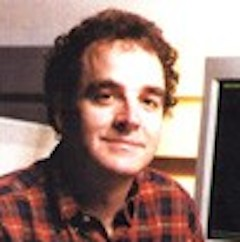

PReach'ing to the Choir: the Role of Erlang in Industrial-Scale Formal Verification
Mark GreenstreetProfessor in the CS Department at the University of British Columbia
PReach'ing to the Choir: the Role of Erlang in Industrial-Scale Formal Verification
PReach is a parallel model checker written in Erlang and C++. It has been developed at UBC and Intel, and has been used both places for the past four years and by computer architecture and formal verification researchers at several other instituations. PReach handles model checking problems: a concurrent system is model as a finite state machine, and PReach answers questions such as "Do all reacahble states satisfy a user specified property (such as mutual exclusion)?" or "Does every request for service eventually get granted?" etc.
PReach is built on the sequential model checking tool Murphi. Murphi is written in C++ for speed and memory efficiency. PReach adds an Erlang layer on top of Murphy that distributes the model checking problem across a cluster of compute nodes. We have used PReach on clusters with several hundred machines to verify models with over one hundred billion reachable states to solve verification challenges that cannot be handled by any other tools that we are aware of.
This talk will give a *brief* introduction to model-checking, showing how formal methods can be used to specify and find errors in parallel and distributed systems. We will then describe the PReach architecture, showing how Erlang enables an elegant and robust approach to leveraging highly tuned legacy C++ code while realizing the benefits of a large scale distributed implementation.
Talk objectives:
- We are hoping for a cross-fertilization of the Erlang programming community and formal verification research. For the Erlang community, we'll show a cool application with substantial industrial impact. We hope to learn from the experience of the Erlang community who may see additional opportunities we could leverage.
- Furthermore, UBC has been producing a stream of Erlang programmers as a side-effect of our CpSc 418 course (Parallel Computation, see http://www.ugrad.cs.ubc.ca/~cs418). We welcome interaction and feedback on how we could be of better service to the local software development community.
Target audience:
- Developers who are curious about novel methods of finding errors in concurrent systems and a novel application of Erlang. Anyone who wants to know how we are exposing students to Erlang at UBC and producing Erlang programmers who could join your projects.
About Mark
Mark Greenstreet is a professor in the computer science department at the University of British Columbia. He developed and teaches the first course in parallel computation for computer science majors at UBC: CpSc 418. This course makes extensive use of Erlang as a great way to introduce parallel computing with a focus on communication and performance issues that are then generalized to other paradigms. Mark has also worked in the development of the PReach model-checker, a distributed formal-verification tool for verifying safety and response properties of hardware and concurrent software. Mark's other research interests include formal verification in general, analog circuit verification in particular, VLSI design, computer architecture, and parallel computation.